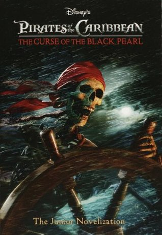
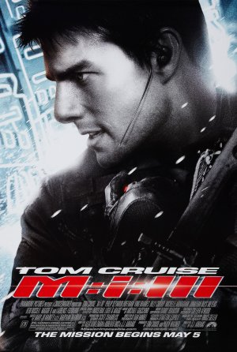

Favourite movies
|
The Shawshank Redemption Realize date: 14 October 1994 (USA) Chronicles the experiences of a formerly successful banker as a prisoner in the gloomy jailhouse of Shawshank after being found guilty of a crime he did not commit. The film portrays the man's unique way of dealing with his new, torturous life; along the way he befriends a number of fellow prisoners, most notably a wise long-term inmate named Red. Written by J-S-Golden Cast: |  DIVERGENT
DIVERGENTRealize date: March 21, 2014 The film received mixed reviews from critics, with praise going towards its concepts and action, and criticism focused on its execution. Cast: |
| 
Pirates of the Caribbean: The Curse of the Black Pearl Realize date: 9 July 2003 (USA) This swash-buckling tale follows the quest of Captain Jack Sparrow, a savvy pirate, and Will Turner, a resourceful blacksmith, as they search for Elizabeth Swann. Elizabeth, the daughter of the governor and the love of Will's life, has been kidnapped by the feared Captain Barbossa. Little do they know, but the fierce and clever Barbossa has been cursed. He, along with his large crew, are under an ancient curse, doomed for eternity to neither live, nor die. That is, unless a blood sacrifice is made. Cast: | 
Missions impossible Realize date: November 23, 1996 Impossible is a series of action spy thriller films based on the television series of the same name, The series is the 20th-highest-grossing film series of all time, with a worldwide gross of over $2 billion to date. A sixth film is currently filming, set to be released in 2018.produced by and starring Tom Cruise as Impossible Missions Force (IMF) agent Ethan Hunt. Cast: |